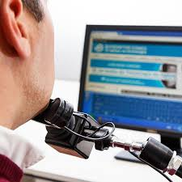
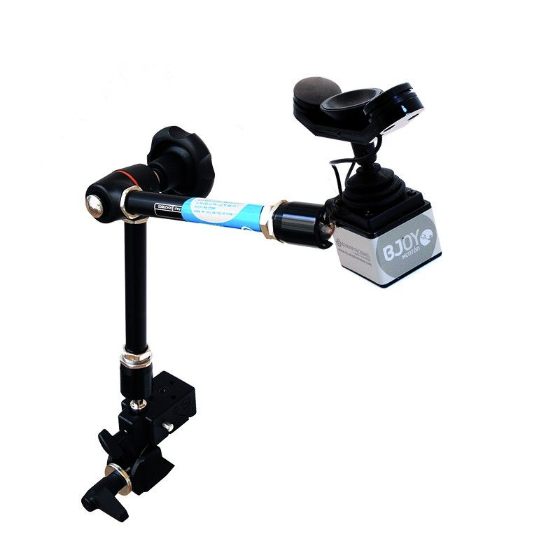
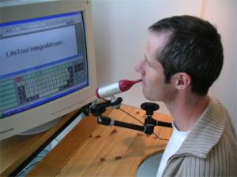

El BJOY Chin Plus es un ratón de mentón que sirve como alternativa para personas que no disponen de movilidad en brazos ni manos. Este dispositivo se destaca por su facilidad de uso y la posibilidad de hablar mientras se usa.
Existen otras alternativas para estas personas, como los ratones que se manejan con la boca. Sin embargo, el BJOY Chin Plus sobresale, ya que estos otros dispositivos pueden llegar a dificultar la respiración y no permiten hablar mientras se utilizan.
Este dispositivo tiene bastantes ventajas respecto a los productos de la competencia en cuanto a su facilidad de uso. El BJOY Chin Plus cuentas con un brazo articulado que mejora la adaptación a cualquier persona. Para usar este ratón se debe colocar a una altura cómoda y adecuada para descansar el mentón sobre él.
También es muy importante ajustar la sensabilidad de este dispositivo para que suponga menos esfuerzo el uso y no genere molestias en el cuello por el constante movimiento.
Además del BJOY Chin Plus, existen otras opciones de ratones para personas con movilidad reducida. Cada alternativa tiene sus propias características que pueden adaptarse mejor a las necesidades específicas de cada usuario.
Algún ejemplo son los ratones que se manejan con la boca o los detectores de la mirada que permiten controlar el cursor con los ojos
Para obtener más información sobre el BJOY Chin Plus y otros dispositivos similares, consulta nuestra página de recursos o ponte en contacto con nosotros.